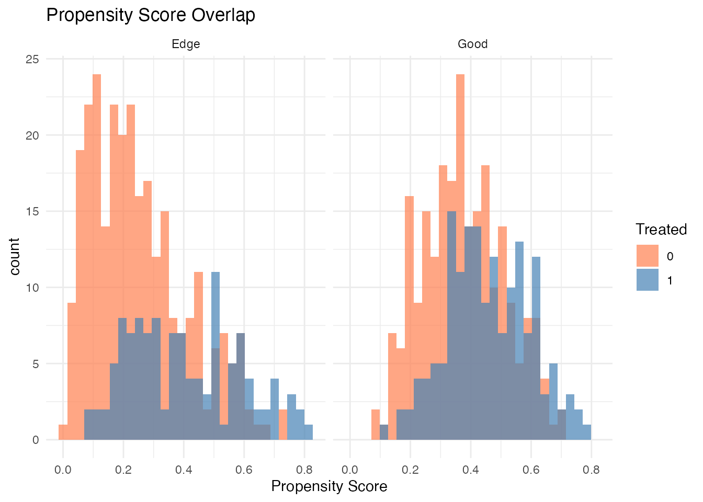
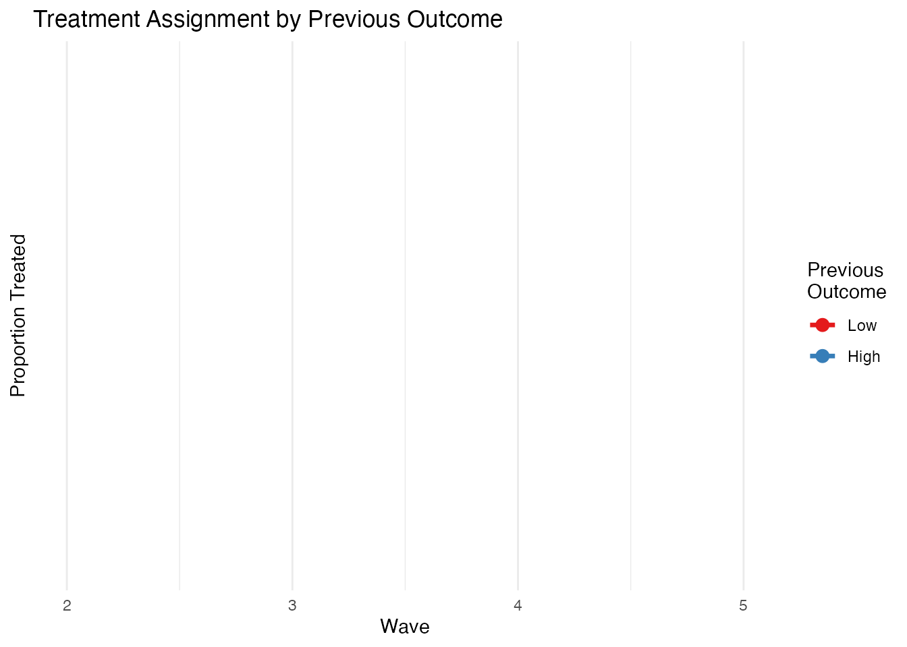
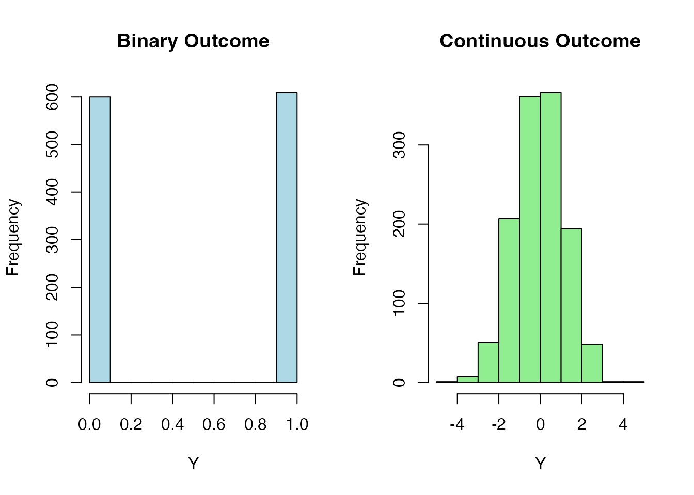

library(margot)
#> margot 1.0.61
library(dplyr)
#>
#> Attaching package: 'dplyr'
#> The following objects are masked from 'package:stats':
#>
#> filter, lag
#> The following objects are masked from 'package:base':
#>
#> intersect, setdiff, setequal, union
library(ggplot2)Overview
The margot_simulate() function generates synthetic
longitudinal panel data with known causal effects. This is invaluable
for:
- Teaching: Demonstrating causal inference concepts with ground truth
- Testing: Validating methods against known parameters
- Development: Creating test cases without large datasets
- Power analysis: Estimating sample sizes for studies
Basic Usage
Simple Simulation
Generate a basic dataset with default settings:
# simulate 500 individuals over 3 waves
sim_data <- margot_simulate(
n = 500,
waves = 3,
seed = 2025
)
# check structure
str(sim_data)
#> tibble [1,500 × 6] (S3: tbl_df/tbl/data.frame)
#> $ id : int [1:1500] 1 1 1 2 2 2 3 3 3 4 ...
#> $ wave : int [1:1500] 1 2 3 1 2 3 1 2 3 1 ...
#> $ l1 : num [1:1500] -1.293 0.249 -0.806 -0.487 0.365 ...
#> $ y : num [1:1500] 0 0 1 1 0 1 0 0 1 0 ...
#> $ a : int [1:1500] 1 0 0 0 1 0 1 1 1 0 ...
#> $ y_end: num [1:1500] NA NA 1 NA NA 0 NA NA 0 NA ...
# summary by wave
sim_data %>%
group_by(wave) %>%
summarise(
n_obs = n(),
prop_treated = mean(a),
mean_outcome = mean(y, na.rm = TRUE),
prop_censored = mean(is.na(y))
)
#> # A tibble: 3 × 5
#> wave n_obs prop_treated mean_outcome prop_censored
#> <int> <int> <dbl> <dbl> <dbl>
#> 1 1 500 NA 0.485 0.184
#> 2 2 500 NA 0.506 0.198
#> 3 3 500 NA 0.504 0.162Wide Format for Analysis
Most margot functions expect wide format data:
# generate wide format directly
wide_sim <- margot_simulate(
n = 300,
waves = 4,
p_covars = 2, # 2 time-varying covariates
exposure_outcome = 0.5, # true effect size
wide = TRUE,
seed = 123
)
# examine structure
names(wide_sim)
#> [1] "id" "t0_l1" "t0_l2" "t0_y" "t0_a" "t1_l1" "t1_l2" "t1_y" "t1_a"
#> [10] "t2_l1" "t2_l2" "t2_y" "t2_a" "t3_l1" "t3_l2" "t3_y" "t3_a" "y"
# ready for margot_causal_forest
head(wide_sim[, c("id", "t0_l1", "t0_l2", "t0_y", "t0_a", "t1_a", "y")])
#> # A tibble: 6 × 7
#> id t0_l1 t0_l2 t0_y t0_a t1_a y
#> <int> <dbl> <dbl> <dbl> <int> <int> <dbl>
#> 1 1 -0.715 -0.753 1 0 1 NA
#> 2 2 1.34 0.00729 0 0 1 NA
#> 3 3 -1.24 0.577 1 1 0 NA
#> 4 4 -1.65 -0.350 0 1 0 0
#> 5 5 0.107 0.211 1 0 1 NA
#> 6 6 0.698 -1.02 0 0 1 NACausal Scenarios
Testing Positivity Assumptions
Simulate different positivity scenarios to test method robustness:
# good positivity
good_pos <- margot_simulate(
n = 500,
positivity = "good",
wide = TRUE,
seed = 1
)
# near violation
edge_pos <- margot_simulate(
n = 500,
positivity = "edge",
wide = TRUE,
seed = 1
)
# violated positivity (deterministic treatment)
viol_pos <- margot_simulate(
n = 500,
positivity = "violated",
wide = TRUE,
seed = 1
)
# compare propensity score distributions
if (requireNamespace("ggplot2", quietly = TRUE)) {
# calculate simple propensity scores for non-missing data
good_complete <- good_pos[!is.na(good_pos$t0_a) & !is.na(good_pos$t0_l1), ]
edge_complete <- edge_pos[!is.na(edge_pos$t0_a) & !is.na(edge_pos$t0_l1), ]
ps_good <- glm(t0_a ~ t0_l1, data = good_complete, family = binomial)$fitted.values
ps_edge <- glm(t0_a ~ t0_l1, data = edge_complete, family = binomial)$fitted.values
ps_df <- data.frame(
propensity = c(ps_good, ps_edge),
scenario = rep(c("Good", "Edge"), c(length(ps_good), length(ps_edge))),
treated = c(good_complete$t0_a, edge_complete$t0_a)
)
ggplot(ps_df, aes(x = propensity, fill = factor(treated))) +
geom_histogram(alpha = 0.7, position = "identity", bins = 30) +
facet_wrap(~scenario) +
theme_minimal() +
labs(title = "Propensity Score Overlap",
x = "Propensity Score",
fill = "Treated") +
scale_fill_manual(values = c("0" = "coral", "1" = "steelblue"))
}
Treatment Feedback Loops
Simulate realistic scenarios where past outcomes affect future treatment:
# simulate with outcome feedback on treatment
feedback_data <- margot_simulate(
n = 1000,
waves = 5,
y_feedback = 0.8, # strong feedback effect
covar_feedback = 0.3, # treatment affects covariates
wide = FALSE, # long format to see dynamics
seed = 999
)
# examine treatment patterns by previous outcome
feedback_data %>%
filter(wave > 1) %>%
group_by(wave) %>%
mutate(prev_y_cat = cut(lag(y), breaks = 3, labels = c("Low", "Med", "High"))) %>%
filter(!is.na(prev_y_cat)) %>%
group_by(wave, prev_y_cat) %>%
summarise(
prop_treated = mean(a),
n = n(),
.groups = "drop"
) %>%
ggplot(aes(x = wave, y = prop_treated, color = prev_y_cat)) +
geom_line(size = 1.2) +
geom_point(size = 3) +
theme_minimal() +
labs(title = "Treatment Assignment by Previous Outcome",
x = "Wave",
y = "Proportion Treated",
color = "Previous\nOutcome") +
scale_color_brewer(palette = "Set1")
#> Warning: Using `size` aesthetic for lines was deprecated in ggplot2 3.4.0.
#> ℹ Please use `linewidth` instead.
#> This warning is displayed once every 8 hours.
#> Call `lifecycle::last_lifecycle_warnings()` to see where this warning was
#> generated.
#> Warning: Removed 8 rows containing missing values or values outside the scale range
#> (`geom_line()`).
#> Warning: Removed 8 rows containing missing values or values outside the scale range
#> (`geom_point()`).
Censoring and Missing Data
Differential Censoring
Test methods under various censoring mechanisms:
# censoring dependent on treatment
censor_data <- margot_simulate(
n = 500,
waves = 6,
censoring = list(
rate = 0.3, # base rate 30%
exposure_dependence = TRUE, # treated more likely censored
latent_dependence = TRUE, # unmeasured factors
latent_rho = 0.6 # correlation strength
),
wide = FALSE,
seed = 456
)
# censoring patterns
censor_summary <- censor_data %>%
group_by(id) %>%
summarise(
last_obs = max(wave[!is.na(y)]),
ever_treated = as.integer(any(a == 1, na.rm = TRUE))
) %>%
mutate(censored = last_obs < 5)
#> Warning: There were 76 warnings in `summarise()`.
#> The first warning was:
#> ℹ In argument: `last_obs = max(wave[!is.na(y)])`.
#> ℹ In group 235: `id = 235`.
#> Caused by warning in `max()`:
#> ! no non-missing arguments to max; returning -Inf
#> ℹ Run `dplyr::last_dplyr_warnings()` to see the 75 remaining warnings.
# compare censoring by treatment
censor_summary %>%
group_by(ever_treated) %>%
summarise(
n = n(),
prop_censored = mean(censored),
mean_last_wave = mean(last_obs)
)
#> # A tibble: 2 × 4
#> ever_treated n prop_censored mean_last_wave
#> <int> <int> <dbl> <dbl>
#> 1 0 209 0.651 -Inf
#> 2 1 291 0.196 5.25Item-level Missing Data
Add realistic MCAR patterns to covariates:
miss_data <- margot_simulate(
n = 300,
waves = 4,
p_covars = 3,
item_missing_rate = 0.2, # 20% MCAR
seed = 789
)
# missing data patterns
miss_data %>%
summarise(
across(starts_with("l"), ~mean(is.na(.)), .names = "miss_{.col}")
)
#> # A tibble: 1 × 3
#> miss_l1 miss_l2 miss_l3
#> <dbl> <dbl> <dbl>
#> 1 0.435 0.459 0.422Integration with margot Workflow
Complete Analysis Pipeline
# 1. simulate data with known effect
sim_wide <- margot_simulate(
n = 1000,
waves = 3,
p_covars = 3,
exposure_outcome = 0.4, # true ATE = 0.4
positivity = "good",
wide = TRUE,
seed = 2025
)
# 2. prepare for analysis
baseline_vars <- c("t0_l1", "t0_l2", "t0_l3")
exposure_var <- "t1_a"
outcome_var <- "y"
# 3. estimate causal effects (requires grf)
if (requireNamespace("grf", quietly = TRUE)) {
# estimate with causal forest
results <- margot_causal_forest(
data = sim_wide,
exposure = exposure_var,
outcome = outcome_var,
covariates = baseline_vars
)
# compare to truth
ate_est <- results$ate
ate_true <- 0.4
cat("True ATE:", ate_true, "\n")
cat("Estimated ATE:", round(ate_est$estimate, 3), "\n")
cat("95% CI:", round(ate_est$ci_lower, 3), "-", round(ate_est$ci_upper, 3), "\n")
cat("Covers truth:", ate_true >= ate_est$ci_lower & ate_true <= ate_est$ci_upper, "\n")
}Power Analysis Example
Use simulation to determine required sample size:
# function to run one simulation and test
run_power_sim <- function(n, effect_size = 0.3, alpha = 0.05) {
# simulate data
dat <- margot_simulate(
n = n,
waves = 3,
exposure_outcome = effect_size,
wide = TRUE
)
# simple t-test on final outcome
treated <- dat$y[dat$t1_a == 1]
control <- dat$y[dat$t1_a == 0]
# check if we reject null
t.test(treated, control)$p.value < alpha
}
# test different sample sizes
set.seed(100)
sample_sizes <- c(100, 200, 500, 1000)
power_results <- sapply(sample_sizes, function(n) {
# run 100 simulations per sample size
rejections <- replicate(100, run_power_sim(n, effect_size = 0.3))
mean(rejections)
})
# display results
power_df <- data.frame(
n = sample_sizes,
power = power_results
)
print(power_df)
#> n power
#> 1 100 0.06
#> 2 200 0.06
#> 3 500 0.03
#> 4 1000 0.08
# plot if ggplot2 available
if (requireNamespace("ggplot2", quietly = TRUE)) {
ggplot(power_df, aes(x = n, y = power)) +
geom_line(size = 1.2) +
geom_point(size = 3) +
geom_hline(yintercept = 0.8, linetype = "dashed", color = "red") +
scale_y_continuous(limits = c(0, 1), labels = scales::percent) +
theme_minimal() +
labs(title = "Power Analysis for Detecting ATE = 0.3",
x = "Sample Size",
y = "Statistical Power") +
annotate("text", x = 750, y = 0.85, label = "80% power", color = "red")
}
Advanced Scenarios
Multi-wave Feedback Dynamics
# complex scenario with multiple feedback loops
complex_sim <- margot_simulate(
n = 500,
waves = 10,
p_covars = 2,
y_feedback = 0.5, # outcomes affect treatment
covar_feedback = 0.4, # treatment affects covariates
exposure_outcome = 0.3, # direct effect
outcome_type = "continuous",
seed = 555
)
# extract one individual's trajectory
id_10 <- complex_sim %>%
filter(id == 10) %>%
select(wave, l1, l2, a, y)
print(id_10)
#> # A tibble: 10 × 5
#> wave l1 l2 a y
#> <int> <dbl> <dbl> <int> <dbl>
#> 1 1 0.409 0.322 0 0.0950
#> 2 2 -1.31 0.0192 0 -1.95
#> 3 3 -0.0755 -0.201 1 0.236
#> 4 4 -1.28 1.12 0 1.93
#> 5 5 0.756 1.57 1 2.22
#> 6 6 0.248 1.42 0 0.184
#> 7 7 -0.838 -0.480 1 0.549
#> 8 8 -1.33 1.59 0 -0.194
#> 9 9 0.151 0.355 0 -0.163
#> 10 10 0.195 -0.963 0 0.691Binary vs Continuous Outcomes
# binary outcome
binary_sim <- margot_simulate(
n = 500,
outcome_type = "binary",
exposure_outcome = 0.6, # on log-odds scale
seed = 111
)
# continuous outcome
cont_sim <- margot_simulate(
n = 500,
outcome_type = "continuous",
exposure_outcome = 0.6, # on natural scale
seed = 111
)
# compare distributions
par(mfrow = c(1, 2))
hist(binary_sim$y, main = "Binary Outcome", xlab = "Y", col = "lightblue")
hist(cont_sim$y, main = "Continuous Outcome", xlab = "Y", col = "lightgreen")
Tips and Best Practices
- Always set a seed for reproducibility
- Start simple and add complexity gradually
- Validate assumptions by checking generated data
- Match your simulation to your analysis plan
- Use wide format for margot analysis functions
Parameter Reference
Key parameters and their effects:
-
n: Sample size (individuals) -
waves: Number of time points -
p_covars: Number of time-varying covariates -
exposure_outcome: True causal effect size -
positivity: Treatment assignment mechanism -
censoring: Dropout patterns -
y_feedback: Dynamic treatment regimes -
covar_feedback: Post-treatment confounding -
outcome_type: Binary or continuous outcomes -
wide: Output format
Conclusion
margot_simulate() provides a flexible framework for
generating realistic longitudinal data. Use it to:
- Test your analysis code before applying to real data
- Understand method performance under various scenarios
- Teach causal inference concepts with known ground truth
- Design studies with appropriate power
For more examples, see the main margot workflow vignette.